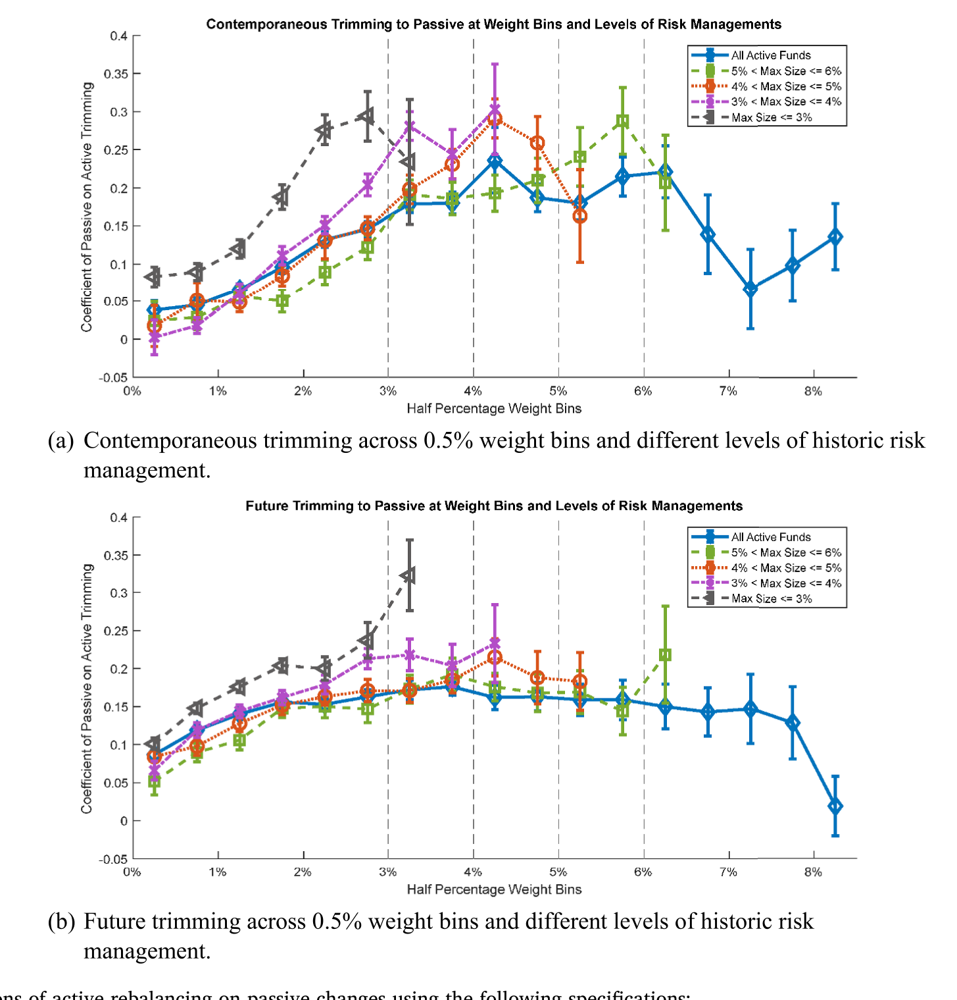
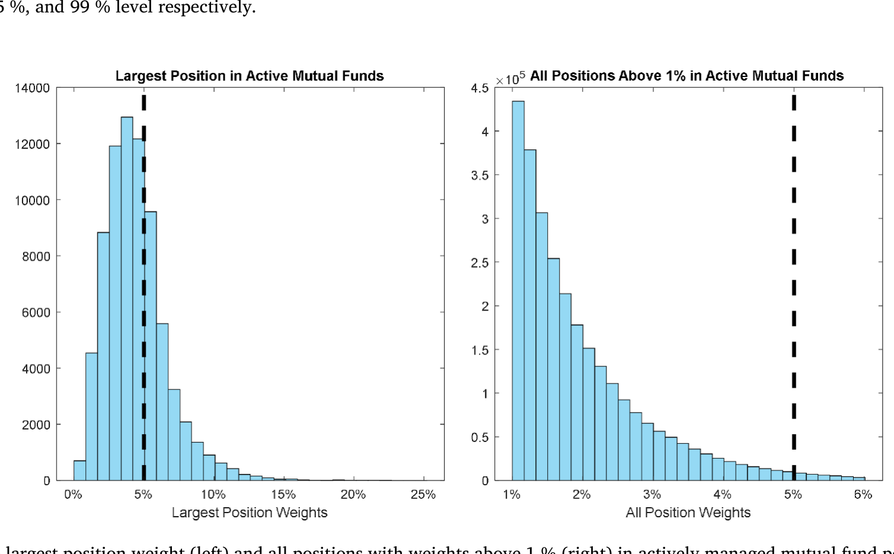
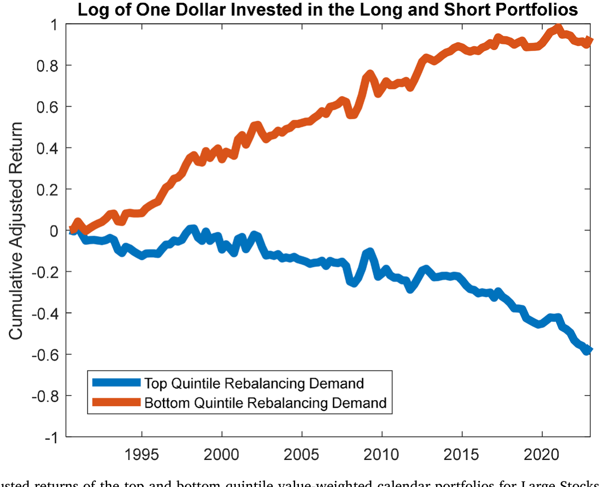
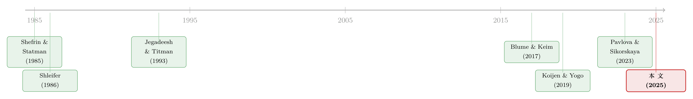

巨头越涨，基金越要卖它：藏在动量里的「再分散」需求
本文读的是 Chen (2025, Journal of Financial Economics)：当一只股票因为上涨而在基金组合里越占越重时，主动管理的基金会可预测地把它修剪掉，以维持一份「practical diversification（实用意义上的分散）」。这种修剪集中发生在监管与风控隐含的阈值——尤其是 5% 的单一发行人集中度上限——附近。由于最大的那些股票被几乎所有基金广泛、且重仓持有，它们就承受了一股协调一致的逆向交易需求。作者把这股需求叫做 diversification driven demand，并证明它在大盘股里制造出一种新的「先跌后反转」的收益模式；补偿这股需求，正好能放大 1990–2022 年间的动量收益。
1 引言：两条相互冲突的铁律
先讲一个几乎所有人都知道、却很少有人把它推到底的事实。
过去十几年，美国股市的市值越来越向少数几家巨头集中。Apple 和 Microsoft 到 2024 年都各自超过了 S&P 500 的 5%。这是一条铁律：赢家通吃，强者恒强。
但资产管理行业还有另一条铁律，方向恰好相反：别把鸡蛋放在一个篮子里。这不是一句鸡汤，而是写进法律和合规手册里的硬约束。按照《投资公司法》(Investment Company Act)，一只对外宣称「diversified（分散型）」的共同基金，必须保证其 75% 的资产里、任何单一发行人的持仓都低于 5%。换句话说，5% 这个数字，是悬在每一位主动基金经理头上的一根红线。
于是，一个看似平淡、实则要命的矛盾就出现了：当 Apple 一路上涨，它在每一只基金组合里的权重都会机械地膨胀，悄悄逼近、甚至顶破那条 5% 的红线。一个尽职的、做风控的基金经理，这时候会怎么办？
答案朴素得近乎无聊——把它修剪掉一点。
但真正有意思的地方在于：做这件事的，不是某一个经理，而是几乎所有持有 Apple 的经理。而 Apple 这类巨头，恰恰是被广泛持有、且被重仓持有的。于是无数只手在同一时刻、朝同一个方向、因为同一个理由动了起来——这就从一个琐碎的合规动作，被放大成一股全市场层面的、协调一致的逆向抛售。
本文要讲透的，就是这一个核心：一项再普通不过的风险管理纪律——维持分散——如何聚合成一股可预测的资产需求，并在最不该有「异象」的地方（最大、最流动的那批股票里）刻下一道收益的反转。 这股需求，作者命名为 diversification driven demand（分散驱动的需求）。
这个故事最反直觉的一点，是它把传统异象文献的「栖息地」整个翻了个面。我们习惯于在小盘、难套利的股票里找超额收益；而本文偏偏在大盘、最流动的股票里，找到了一种稳定的、机构风控制造出来的可预测性。（关于「市场其实只是一小撮巨头」这件事的另一面，可参见《两种市场收益的故事》。）
2 把权重变化拆成两半：主动 vs 被动
要把上面那个故事讲成证据，第一步是把「基金到底做了什么」说清楚。问题在于：一只股票在组合里的权重发生变化，可能是因为经理真的在买卖它，也可能仅仅因为它涨了或跌了——后者根本不需要经理动一根手指。这两件事必须被干净地分开。
作者沿用了一套现在已经相当标准的分解。考虑股票 \(i\) 在基金 \(j\)、从第 \(t-1\) 季到第 \(t\) 季的总权重变化，把它写成两部分之和：
这里的关键是那个「投影权重」\(\hat{w}_{i,j,t}\)：假设经理从上一季末起就袖手不动、原封不动地持有整个组合，那么仅凭各只股票各自的收益，第 \(t\) 季末每只股票该有多重？它的定义是：
$$\hat{w}_{i,j,t} = \frac{(1+r_{i,t})\,w_{i,j,t-1}}{\sum_{i}(1+r_{i,t})\,w_{i,j,t-1}}$$
读这个式子，要读出两层意思。第一，分子是「这只股票涨完之后的市值」，分母是「整个组合涨完之后的市值」，两者一比，就是不交易情形下的新权重。第二，也是更微妙的一点——\(\hat{w}\) 被整个组合的收益所缩放（看分母）。这意味着：哪怕一只股票自己涨得不算离谱，只要组合里别的股票普遍在跌，它的 Passive 也会被推得很高。简单地说，Passive 度量的，是「光靠涨跌、这只股票在组合里变得有多挤」。
于是 Active（真实权重减去投影权重）就是经理人扣掉市场漂移之后、真正主动做出的那部分调整。这正是我们想盯住的东西。
一个容易被忽略、却对全文至关重要的机械事实：Passive 天然地随市值递增。市值越大的股票，在一个典型组合里的初始权重 \(w_{i,j,t-1}\) 越高；初始权重越高，同样的涨幅带来的权重漂移就越大。所以「权重被涨上去」这件事，本身就高度集中在大盘股身上——这是后面所有结论的伏笔。
3 逆向、非对称、且卡在 5% 上：再平衡的三个指纹
有了 Active 和 Passive，一个自然的问题是：当一只股票因为上涨而 Passive 为正（权重被动膨胀）时，经理人的 Active 是顺势加仓，还是逆势削减？
答案是逆势削减——Active 与 Passive 显著负相关。但如果故事到此为止，那不过是又一篇「机构会逆向交易」的文章。本文真正的功夫，在于它给这股逆向交易按上了三枚无法被行为金融学解释、却处处指向「风控合规」的指纹。
指纹一：非对称。 经理人主要在权重被涨上去的时候才修剪，而且只在那些原本就已经在组合里占比不小的股票上修剪。换句话说，它不是「见涨就卖」的对称反应，而是「太挤了才卸」的单边动作。由于权重高度随市值递增，这种修剪也就集中落在了大盘股上。如图 2 所示，把 Active 对 Passive 做分段回归，可以清楚看到这条关系的斜率在权重的高端骤然变陡——越挤，卖得越狠。

Figure 2: Piecewis e regressions (cid:0)of active reba)lancing on passive changes using the following specifications:
指纹二：卡在 5%。 最可预测的修剪，发生在权重处于 4–6% 这个区间的持仓上——正好把行业里那条无处不在的 5% 单一发行人上限夹在当中。这绝不是巧合。如果驱动逆向交易的是行为偏差（比如「处置效应」般地厌恶持有赢家），它没有理由偏偏在 5% 附近发力。
指纹三：权重在 5% 之下「堆」了起来。 作者祭出了断点密度检验 (density discontinuity test, McCrary 2008)，去检查持仓权重的分布。结果是：受合规约束的「分散型」组合，其权重分布在 5% 下方非对称地聚集——像一群人挤在门槛前不愿越线；而对那些不受这条指引约束的基金，这个堆积特征完全消失。更进一步，是更大的基金家族（推测其风控更严）在 5% 这条线上制造了最强的非对称。如图 1，最大单一持仓权重的分布在 5% 之下明显堆积、之上骤然稀薄，正是这道门槛的视觉证据。

Figure 1: Histogram of the largest position weight (left) and all positions with weights above 1 % (right) in actively managed mutual fund portfolios
把三枚指纹放在一起，结论就很硬了：这不是情绪，是制度。作者还做了一组「排除法」——那些代表经理人能力强、任职久的变量，对这种逆向交易几乎没有解释力；而代表投机动机的变量（比如一个仓位是不是新近建立的）也不带来更强的逆向行为。能解释它的，恰恰是分散化的历史与合规的约束本身。
4 从基金到市场：为什么大盘股「躲不掉」
到这里，我们只证明了单只基金在做修剪。但修剪不等于市场需求——如果一家基金卖出 Apple，它旗下另一只基金正好买入，那么在家族层面就净额抵消了，市场根本感受不到。
然后，真正关键的一步出现了。作者指出：基金家族确实会尽量在内部对冲这些再平衡交易；但对于那些被广泛持有、且家家重仓的大盘股，这种内部对冲是做不平的——因为所有人都已经满仓了，没有谁还有「反方向的空位」去吸收别人的卖压。于是，这批股票的修剪需求无法在资产管理业内部消化，只能外溢到行业之外的非资管参与者那里。
这就把一个微观的合规动作，翻译成了一股净市场需求。量级上，组合权重每变动一个标准差（约 0.22%），就对应着该股票被主动基金持有比例约 0.08% 的变化（样本里一只股票被主动基金持有的中位数是 7.66%）。数字不大，但它是可预测、可聚合、且系统性偏向大盘股的——这正是它能在价格上留下痕迹的前提。
这里要小心一个误读。本文说的不是「机构在恐慌性甩卖」。作者反复强调，这种交易是 trimming（修剪），不是 liquidation（清仓）；它不伴随整仓的大幅缩减或资产轮动，量级温和。正因为温和、机械、且与基本面无关，它才更像一股纯粹的「需求」冲击，而不是信息驱动的抛售。
5 反转出现：一种长在大盘股里的可预测性
如果有一股可预测的、与基本面无关的需求在压低（或抬升）某些股票的价格，那么按照需求型资产定价的逻辑（参见《谁在持有这张债券，决定了它的价格》、《为什么「理性投资者」也会拒绝换股？》），价格应当先被这股需求推离、随后再慢慢回归。换句话说，我们应当看到先冲击、后反转。
作者构造了一个聚合变量 Rebalancing Demand：把一只股票在所有可观测基金里、由收益驱动的权重变化（也就是 Passive 这一块）平均起来，作为「这只股票这季度会被多大力度地修剪」的代理。然后看它对未来收益的预测。
结果干净得漂亮。Rebalancing Demand 每高出一个标准差（即更倾向被卖出），预示着：
- 在随后头 35 个交易日内有
-0.44%（t = -3.21）的收益——这是卖压把价格压下去的阶段； - 在该交易季度剩下的时间里有
+0.27%（t = 2.60）的正收益——这是反转。
如果再控制住过去的动量和极端的负向过去收益，这个「先跌后反转」会拉到更长的窗口：预测变量每高一个标准差，一个季度内 -0.56%（t = -3.71），而在该年剩余时间里反转 +0.67%（t = 2.16）。
这些幅度温和、且是暂时的——但它们的「栖息地」才是全文最锋利的地方：所有这些回归都用市值加权，日历组合只取超过 NYSE 市值 80 分位的大盘股。也就是说，这道反转不在小盘、难套利的角落里，而恰恰在最大、最流动的股票群里。如图 6，按 Rebalancing Demand 分组的大盘股，高需求组的五因子调整累计收益先被压低、随后回补，正是这股需求被「先付费、后退款」的轨迹。

Figure 6: Cumulative 5-factors adjusted returns of the top and bottom quintile value-weighted calendar portfolios for Large Stocks (stocks whose value
这与整个异象文献的常识形成了刺眼的对照：异象通常活在小而难套利的股票里（参见 Muravyev et al., 2025 的综述），而本文却在大盘股里找到了稳定的可预测性。
6 它其实一直藏在动量里
故事还可以再往里走一层，而这一层我觉得是本文最聪明的部分。
一只股票在一个规模可观的组合里、由收益驱动的权重变化，本质上是什么？是它过去收益与它市值大小的交互项——涨得多、且块头大的股票，权重漂移最大。而「过去收益 × 市值」这两个维度，恰好就是 Fama–French 因子工厂里动量 (momentum) 和规模 (size) 的原料。
于是一个自然的猜想是：Rebalancing Demand 的影子，应该早就印在那些最朴素的、按规模和动量排序的组合里了。作者去验证——果然如此。在肯·弗伦奇 (Ken French) 提供的因子组合里，只取市值超过 NYSE 前 20% 的那批股票所构成的赢家组合 (Winner) 与输家组合 (Loser)，呈现出与本文完全一致的反转形态。
更妙的是反过来的检验：同时控制传统动量信号与预测出的 Rebalancing Demand，会让两者各自的预测力都增强。这说明它们捕捉的不是同一样东西，而是被混在一起的两股力量——一旦把「再平衡需求」这股机械的、会反转的成分剥离出来，剩下的「真动量」反而看得更清楚了。
换句话说，补偿这股分散驱动的需求，正是动量收益在 1990–2022 这段现代样本里被「擦亮」的一部分原因。一个被忽视的机构风控机制，悄悄地参与塑造了金融学里最著名的异象之一。这是本文从「需求」一路讲到「定价」的落点，也是它真正的野心所在。
7 文献脉络
把这篇论文放回它的来路，能看得更清楚它新在哪里。
最早的两根桩子，一根扎在需求侧定价：Shleifer (1986) 用指数纳入的实验证明「股票的需求曲线是向下倾斜的」，价格会被纯粹的需求推动；另一根扎在交易行为：Shefrin and Statman (1985) 提出「处置效应」——投资者倾向于过早卖出赢家、过久持有输家。Jegadeesh and Titman (1993) 则立起了动量这座绕不开的大山。

接着，这条线在两个方向上长大。一边是机构持仓的事实：Falkenstein (1996) 记录了机构对股票特征的偏好，而 Blume and Keim (2017) 给出了本文最直接的前身——机构系统性地低配了最大的那批超大盘股。本文做的，正是把他们「水平」上的发现推到「交易」层面：不仅持仓低配，连季度到季度的再平衡也是冲着「再分散」去的。另一边是需求型资产定价的范式化：Koijen and Yogo (2019) 把机构对股票特征的偏好写成一个完整的需求体系；Pavlova and Sikorskaya (2023) 证明「跟踪基准」这件事本身就能制造定价需求；Jiang, Vayanos and Zheng (2022) 则讨论了被动投资如何抬高巨头。
本文所处的位置很清楚：它与上述「基准驱动需求」的文献平行但不同。Pavlova–Sikorskaya 们讲的是「为了贴近基准而买」，而本文讲的是「为了远离集中而卖」——同样源自制度约束，方向却相反，且预测力来自一个全新的、与基准无关的渠道。它顺带还给共同基金里的处置效应提供了一个风控解释，给大盘股的可预测性提供了一个限制套利（Shleifer and Vishny, 1997）的微观基础。
8 评论与延伸（Q&A + 研究方向）
(a) 几个可能的疑问
Q：这和经典的「处置效应」到底有什么区别？不就是卖赢家吗？
表面像，内核不同。处置效应是行为偏差，预言的是「见赢家就想卖」，且通常与清仓、且在散户身上最强。本文的修剪是风控驱动：它只在权重被涨上去、且原本就重仓时才发力，集中在 5% 监管阈值附近，在任职更久、风控更严的大家族里更强，且是修剪而非清仓。作者明确把它定位成处置效应的一个「机构/风控」版解释。
Q：把权重变化拆成 Active 和 Passive，这个分解可信吗？会不会只是会计恒等式？
它确实是一个恒等式分解（这是优点，不是缺点）——
Passive完全由价格和上期权重决定，不含任何经理人选择，因此Active是干净的「主动」残差。风险在别处：Passive机械地随市值上升，所以「大盘股被修剪」一部分是构造使然。作者的回应是去看阈值附近的非对称和密度堆积——这些是构造本身无法生成的，只有「合规约束」能解释。
Q：5% 阈值附近的密度堆积，会不会是别的原因（比如基金本来就不买太多某只股票）？
这正是 McCrary 密度检验要排除的。关键的对照是：堆积只出现在受 5% 约束的分散型基金里，对不受约束的基金完全消失；而且是大基金家族在驱动这个非对称。如果是普遍的偏好而非特定的合规线，这种「有约束才有堆积」的对比不该出现。
Q：收益效应只有零点几个百分点，t 值也不算惊人，这重要吗？
单看幅度确实温和、且是暂时的。但本文的卖点不是「又一个高 Sharpe 策略」，而是机制：它发生在最大、最流动、理论上最不该有异象的股票里，且能部分解释动量。一个能擦亮动量、又有清晰制度微观基础的渠道，价值在解释力而非交易盈利。
Q：被动基金（指数基金）也在做这种逆向交易吗？
作者发现被动基金也有显著的逆向交易，但其中很大一部分能被它们机械的复制规则解释，且这些规则往往设计得能让再平衡在家族内部净额抵消。真正难以净掉、从而外溢成市场需求的，是主动基金对广泛重仓的大盘股的修剪。
Q：这股需求是「定价错误」还是「理性补偿」？
本文更接近前者的精神：一股与基本面无关的需求把价格暂时推离、随后反转，符合「价格压力 + 有限套利」的叙事。但它并不声称存在可被无风险套利的钱——因为吸收这股需求的，恰恰是那些已经满仓、没有反向空位的同一批机构，这本身就是套利受限的来源。
(b) 几个可能的研究问题与提案
1. 把这套逻辑搬到公司债市场。
【经济故事】公司债基金同样受发行人集中度与久期/评级约束，当某个发行人的债券因利差收窄而权重涨上去，基金是否也会「再分散」式地修剪？由于公司债远比股票缺乏流动性，这股需求的价格冲击可能更大、反转更慢。
【可行性】中。需要债券层面的基金持仓（如 eMAXX/Lipper）拼接 TRACE 成交与利差，识别上可借用本文的 Active/Passive 分解。难点是公司债持仓披露频率低、净额抵消更难观测。
2. 外资持有人是否系统性地放大或抑制这股需求。 【经济故事】外国机构往往有更严的单一发行人/单一国家集中度限制，且在巨头股上的初始权重与本土机构不同。若外资的「再分散」节奏与本土错位，可能在大盘股上叠加出更强、或相互对冲的需求。 【可行性】中。可用 13F 与跨境持仓数据（如 FactSet/Morningstar 的国别标签）区分外资与本土，比较两类持有人在 5% 阈值附近的密度堆积差异。识别清楚谁在「躲不掉」是关键。
3. 阈值本身的「准自然实验」。
【经济故事】不同监管辖区、不同产品类型（如 UCITS 的 5/10/40 规则 vs. 美国 RIC 的 5%）隐含的集中度上限不同。同一只巨头股被适用不同阈值的基金持有，应在不同权重处出现修剪。
【可行性】高。阈值是外生的制度参数，天然适合断点/密度设计。把同一只股票在「严阈值」与「松阈值」基金里的 Active-Passive 斜率对比，识别相当干净。
4. 这股需求与流动性的内生回路。 【经济故事】Koch et al. (2016) 指出共同基金共同持有会带来流动性共性。若大盘股的修剪需求是协调一致的，它可能在特定季末加剧流动性的同步枯竭——需求与流动性互相强化。 【可行性】中。需要把 Rebalancing Demand 与高频流动性指标（价差、Amihud）在季末窗口对齐，识别要小心区分「需求引发的流动性变化」与「流动性引发的交易」。
参考文献
- Blume, M.E., Keim, D.B. (2017). The changing nature of institutional stock investing. Critical Finance Review 6, 1–41.
- Buffa, A.M., Vayanos, D., Woolley, P. (2022). Asset management contracts and equilibrium prices. Journal of Political Economy 130, 3146–3201.
- Chen, H. (2025). Diversification driven demand for large stock. Journal of Financial Economics 172, 104109.
- DeMiguel, V., Garlappi, L., Uppal, R. (2009). Optimal versus naive diversification: how inefficient is the 1/N portfolio strategy? Review of Financial Studies 22, 1915–1953.
- Falkenstein, E.G. (1996). Preferences for stock characteristics as revealed by mutual fund portfolio holdings. Journal of Finance 52, 111–136.
- Jegadeesh, N., Titman, S. (1993). Returns to buying winners and selling losers. Journal of Finance 48, 65–91.
- Jiang, H., Vayanos, D., Zheng, L. (2022). Passive Investing and the Rise of Mega-Firms. SSRN Working Paper.
- Koch, A., Ruenzi, S., Starks, L. (2016). Commonality in liquidity: a demand-side explanation. Review of Financial Studies 29, 1943–1974.
- Koijen, R.S.J., Yogo, M. (2019). A demand system approach to asset pricing. Journal of Political Economy 127, 1475–1515.
- Lou, D. (2012). A flow-based explanation for return predictability. Review of Financial Studies 25, 3457–3489.
- McCrary, J. (2008). Manipulation of the running variable in the regression discontinuity design: a density test. Journal of Econometrics 142, 698–714.
- Pavlova, A., Sikorskaya, T. (2023). Benchmarking intensity. Review of Financial Studies 36, 859–903.
- Pollet, J.M., Wilson, M. (2008). How does size affect mutual fund behavior? Journal of Finance 63, 2941–2969.
- Roussanov, N. (2010). Diversification and its discontents: idiosyncratic and entrepreneurial risk in the quest for social status. Journal of Finance 65, 1755–1788.
- Shefrin, H., Statman, M. (1985). The disposition to sell winners too early and ride losers too long: theory and evidence. Journal of Finance 40, 777–790.
- Shleifer, A. (1986). Do demand curves for stocks slope down? Journal of Finance 41, 579–590.
- Shleifer, A., Vishny, R.W. (1997). The limits of arbitrage. Journal of Finance 52, 35–55.